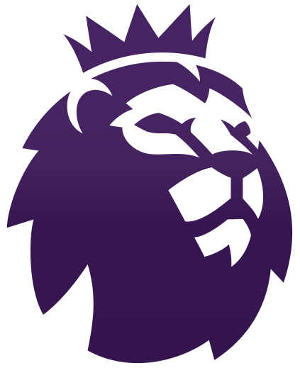

<mat-toolbar>
  <mat-toolbar-row>
    
    <span class="logoName">
    Football Premiere League
    </span>

    <span class="spacer"></span>

    <button mat-button routerLink="teams">
      Clubs Statistics <mat-icon>trending_up</mat-icon>
    </button>

    <button mat-button routerLink="matches">
      Match Statistics <mat-icon>info</mat-icon>
    </button>


  </mat-toolbar-row>
</mat-toolbar>

<router-outlet></router-outlet>
